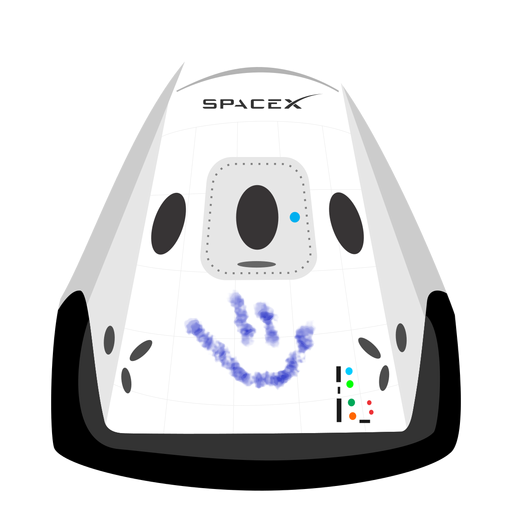

Hyperblog
Tu blog de maestro
Este es el título atractivo e interesante del post
Y este es el párrafo de inicio donde vamos a explicar las cosas increibles que se pueden hacer con ramas

Los blogs son la mejor foprma de compartir información y tus ideas Mucho más que ir a conferencias o salir ne YouTube. Excepto si eres un Rockstar. Pero estadísticamente no lo eres... por ahora.
suscríbete y dale like